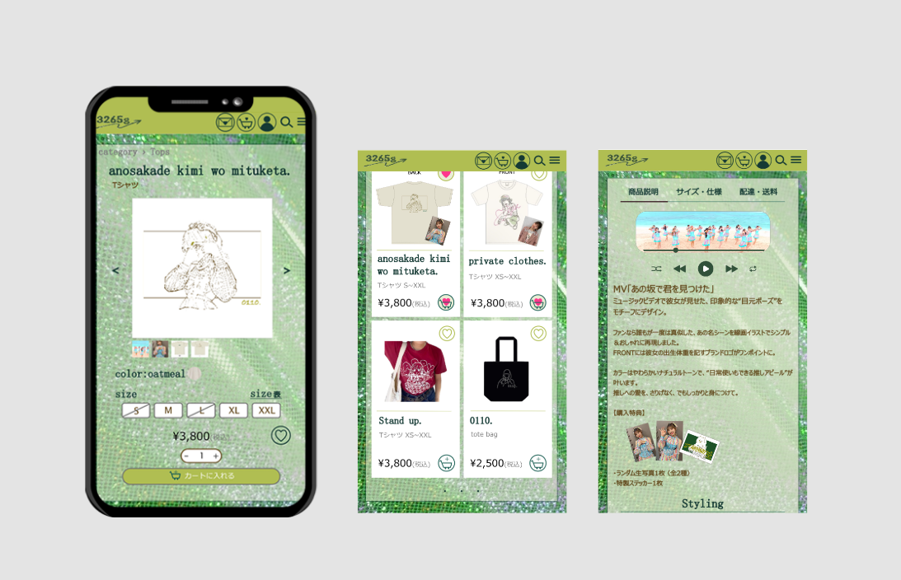
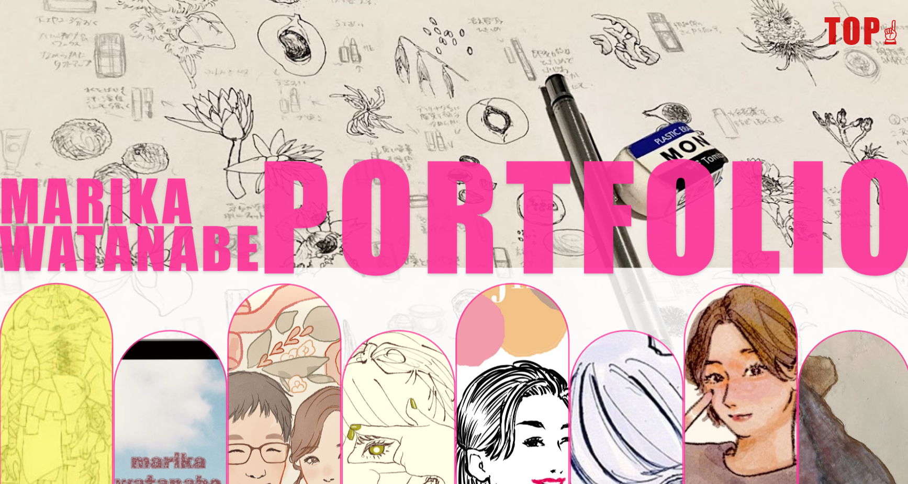
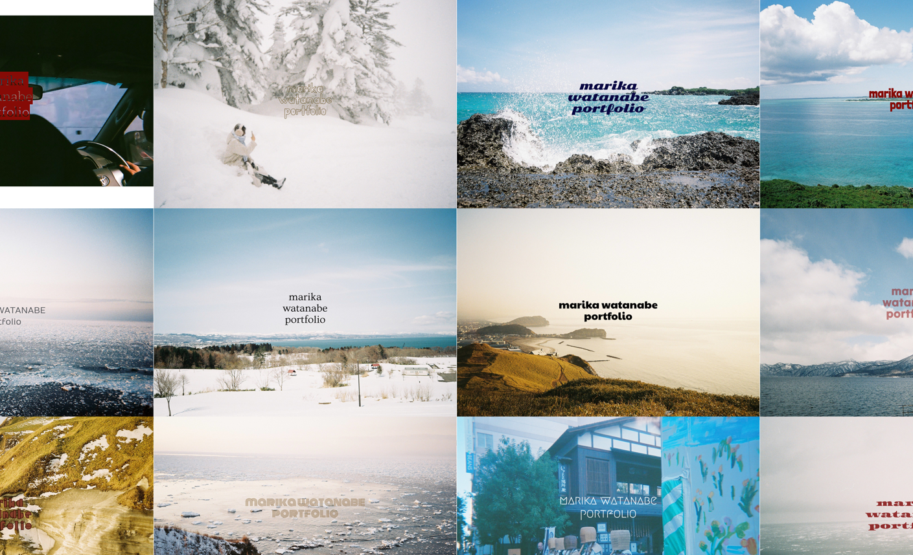
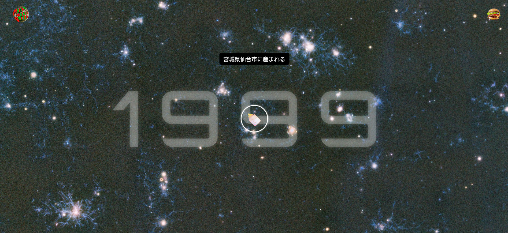

イラストを担当したアイドルグッズを元に制作したWEBサイト。 【ターゲットユーザー】 10〜20代の女性アイドルファン層 【コンセプト】 ・アイドル本人の人となりを感じられるサイト （ファッション・ポップ・ユニーク・女性らしさ） ・ファンが親しみを感じる推し×音楽×グッズのリンク ・シンプルでわかりやすい設計 ※portfolio用制作のため、サイトはサンプルです ※実際のタレント名・曲名は仮名に変更してあります 制作期間：約3日間

これまでの作品をまとめたWEBサイトです。 制作期間：2日間

趣味の旅行で撮影した写真とメッセージをミックスしたコンセプトビジュアルです。 作れるサイトイメージの参考カタログのように見ていただきたいと思い作成。 【撮影地】北海道/山形/宮城/大阪/沖縄/ハワイ/ベトナム/タイ/台湾

当サイトのhistoryページです。 人生年表を楽しく見ていただけるよう工夫。 ターニングポイントになった出来事を背景に年号＋絵文字で表現。 カーソルもしくはクリックで解説が読めます。